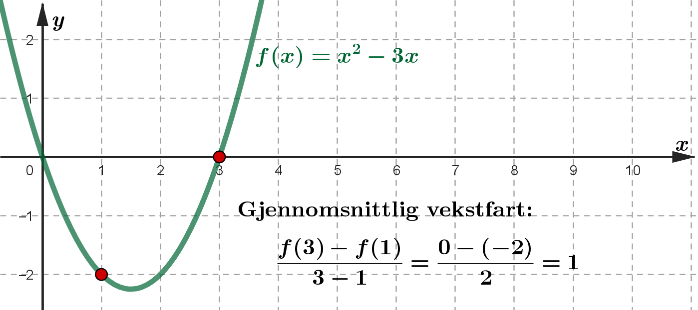

Gjennomsnittlig vekstfart mellom \((a,f(a))\) og \((b,f(b))\) er
\[ \frac{\Delta y}{\Delta x} = \frac{f(b)-f(a)}{b-a} \]Momentan vekstfart i et punkt \((a,f(a))\) er definert som
\[ f'(a) = \lim_{h\rightarrow 0} \frac{f(a+h)-f(a)}{h} = \lim_{h\rightarrow 0} \frac{f(a)-f(a-h)}{h} \]Den momentane vekstfarten kalles den deriverte i punktet.
Hva er gjennomsnittlig vekstfart mellom \((1,f(1))\) og \((3,f(3))\)?
Hva er momentan vekstfart når \(x=1\)?

Momentan vekstfart:
\[ \begin{aligned} \lim_{h\rightarrow 0} \frac{f(1+h)-f(1)}{h} &= \lim_{h\rightarrow 0} \frac{((1+h)^2-3(h+1))-(-2)}{h}\\ &= \lim_{h\rightarrow 0} \frac{1+2h+h^2-3h-3+2}{h}\\ &= \lim_{h\rightarrow 0} \frac{h^2-h}{h}\\ &= \lim_{h\rightarrow 0}(h-1) = -1 \end{aligned} \]Vis at \(f'(x)=2x\) når \(f(x)=x^2\).
Hvis en funksjon har en kjerne, skal vi multiplisere med den deriverte av kjernen når vi deriverer.
\[ f'(x) = g'(u) \cdot u' \]Numerisk derivasjon innebærer å finne tilnærmingsverdier (ca.-verdier) for den deriverte ved hjelp av formelen
\[ f'(a)\approx \frac{f(a+h)-f(a)}{h} \]hvor \(h\) er et lite tall.
def f(x):
return -x**3 + 3*x**2 + 9*x + 1
h = 0.01
def Df(x):
return (f(x+h) - f(x)) / h
print(Df(1)) # Skriver ut vekstfarten (den deriverte) når x = 1
def f(x):
return -x**3 + 3*x**2 + 9*x + 1
h = 0.01
def Df(x):
return (f(x+h) - f(x)) / h
x = -10
while x < 10:
if Df(x) <= 0 and Df(x+h) > 0:
print('Bunnpunkt:', (x, f(x))) # Skriver ut bunnpunkt til grafen
if Df(x) >= 0 and Df(x+h) < 0:
print('Toppunkt:', (x, f(x))) # Skriver ut toppunkt til grafen
x = x + h